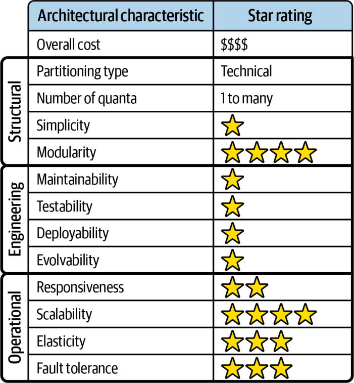
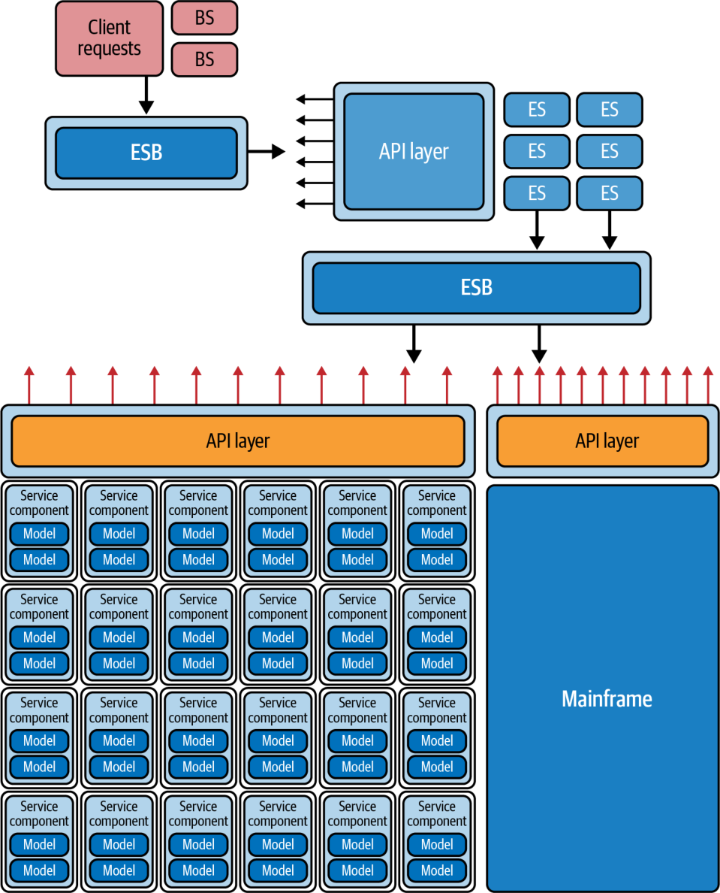

SOA ارکستراسیونمحور چندین دهه پیش از پیدایش ابر پدید آمد، از این رو هیچ ملاحظهای برای ساختنِ این معماری (در شکل اصلیاش) در ابر وجود ندارد.
با این حال، کاربرد امروزیِ این سبک آن را به یک معماری یکپارچهسازیِ خوب برای سرویسهای ابری و درونسازمانیای تبدیل میکند که باید با هم یکپارچه شوند و در گردشکارها مشارکت کنند. این سبک، که در درجهٔ نخست یک معماری یکپارچهسازی است، با سرویسها و امکانات مبتنی بر ابر بهخوبی کار میکند.
در پایان قرن گذشته و آغاز قرن کنونی، ریسکهای بزرگ این معماری عمدتاً به این مربوط بودند که چقدر هزینه داشت، پیادهسازیاش چقدر طول میکشید و (چه شگفتیِ تکاندهندهای!) نگهداری و بهروزرسانیِ این سیستمها چقدر دشوار است. بسیاری از این پروژهها تلاشهایی بسیار پرهزینه و چندساله بودند که تصمیمهای حیاتیشان در ردهٔ بالای سلسلهمراتب شرکت گرفته میشد. شرکتها بهجای آنکه این پروژهها را «شکستخورده» بنامند، بیشترشان آنها را به معماریهای یکپارچهسازی با مرزهای بهتر، که به ایدههای DDD نزدیکتر بودند، تبدیل کردند.
هنگامی که معماران در یک سیستم مدرن از ESB بهعنوان ابزاری برای یکپارچهسازی استفاده میکنند، بزرگترین ریسک، شیب لغزندهای است که در آن ESB بهتدریج کل معماری را در بر میگیرد. این ضدالگو SOA اتفاقی (Accidental SOA) نامیده میشود: وضعیتی که در آن معمار بهتدریج و ناخواسته، بیآنکه متوجه شود، یک SOA کاملاً ارکستراسیونمحور میسازد. معمار برای پرهیز از SOA اتفاقی باید از مرزهای کپسولهسازیِ معقول برای ارکستراسیون اطمینان یابد و به مسائلی مانند مرزهای تراکنش توجه دقیق کند.
در دورهای که این معماری محبوب بود، آزمون کلنگرِ امروزی رایج نبود. تیمها بهندرت SOA را بیرون از آزمونهای رسمی در سطح تضمین کیفیت (quality assurance) میآزمودند، از این رو سازندگان ابزارها و چارچوبها توجه چندانی به تسهیلِ آزمودنِ تکتکِ بخشها نداشتند. برخی چارچوبهای آزمون برای ساختنِ ساختگیسازیها (mocks) و جانشینسازیها (stubs) برای ماشینآلات عظیم گذرگاه پیام و اجزای متحرکِ مرتبط با آن پدید آمدند، اما همواره دستوپاگیر و ناهمسان بودند.
حاکمیت نیز از همین محدودیتها رنج میبرد. ایدهٔ خودکارسازیِ حاکمیت معماری از خودکارسازیِ آزمون هم ناآشناتر بود. در این دوره، «حاکمیت» به معنای چارچوبهای سنگین، جلسهها و بازبینیهای کد بود؛ همه دستی.
با این حال، معماران هنوز درون سازمانهایی که به ترکیب ویژهٔ قابلیتهای ESBها نیاز دارند، از آنها بهصورت راهبردی استفاده میکنند. بهویژه، بسیاری از شرکتها سیستمهای میراثیای دارند که باید با سیستمهای مدرنتر تعامل کنند و اغلب نتایج را ترکیب و رفتار را تجمیع کنند؛ و همهٔ اینها کارکرد محوریِ یک ESB را توصیف میکند. در این سناریوها، توابع برازش میتوانند نقشی حیاتی در پیشگیری از «نشت» دادهها یا زمینههای محدود به بخشهایی از زیستبوم که نباید در آنها ظاهر شوند، ایفا کنند.
برای نمونه، سیستمی را در نظر بگیرید که از یک ESB برای هماهنگی میان یک بستهٔ برنامهریزی منابع سازمانی (enterprise resource planning یا ERP)، یک ابزار فروش برخط و سرویسهای مدرنترِ Accounting مبتنی بر میکروسرویس استفاده میکند. در این سناریو، سیستم باید تنها از ERP و سیستمهای فروش بخواند و در میکروسرویسهای Accounting بنویسد. معماران میتوانند نخست یک تابع برازش بسازند که اطمینان دهد همهٔ ارتباطات بهطور یکنواخت در لاگها نوشته میشوند، سپس تابع برازشی مانند تابع زیر بنویسند (که در اینجا بهصورت شبهکد آمده است):
READ logs for ERP into ERP-logs for past 24 hours
READ logs for Sales into Sales-logs for past 24 hours
FOREACH entry IN ERP-logs
IF 'operation' is 'update' and 'target' != 'accounting' THEN
raise fitness function violation
"Invalid communication between integration points"
END IF
FOREACH entry IN Sales-logs
IF 'operation' is 'update' and 'target' != 'accounting' THEN
raise fitness function violation
"Invalid communication between integration points"
END IFاین تابع برازش مدخلهای لاگِ هر دو نقطهٔ یکپارچهسازی را میخواند تا اطمینان یابد هیچ عملیات بهروزرسانیای که مقصدش سیستم Accounting نباشد انجام نمیشود.
معماران با استفاده از چنین توابع برازشی میتوانند از ابزارهایی مانند ESBها بهصورت راهبردی استفاده کنند و در عین حال پیرامون جاهایی که تیمها معمولاً از آنها سوءاستفاده میکنند، نردههای محافظ (guardrails) بسازند.
همانگونه که معماران توپولوژیهای داده را برای SOA ارکستراسیونمحور در نظر نمیگرفتند، دربارهٔ توپولوژیهای تیم نیز وضع همین است؛ موضوعی که در زمان محبوبیت این سبک معماری ناشناخته بود.
در واقع، طبقهبندیِ سختگیرانهٔ این سبک خود یک ضدالگوی ارتباطی (communication antipattern) است که معماران را به تدوین اصول توپولوژیهای تیم رهنمون شد. هدف این معماری جداسازیِ افراطیِ مسئولیتها، همراه با جداسازیِ متناظرِ اعضای تیم است. در میان شرکتهایی که این معماری را پذیرفتند، بهراستی کمیاب بود که کسی که سرویسهای کسبوکار را میساخت با کسی که سرویسهای سازمانی را میساخت گپ بزند. از آنها انتظار میرفت از راه مصنوعات فنی، مانند قراردادها و رابطها، با هم ارتباط برقرار کنند. سطح انتزاع در این سبک لایههای یکپارچهسازیِ فراوانی پدید میآورد که هر یک را تیمهای متفاوتی پیادهسازی میکنند و برای ارتباط از ابزارهای تیکتینگِ (ticketing tools) سازمانی استفاده میکنند. بهآسانی میتوان دید چرا توسعهدهندگان ساختنِ قابلیتها در این سبک را زمانبر مییابند.
بسیاری از معیارهایی که اکنون برای ارزیابی سبکهای معماری به کار میبریم، در زمان محبوبیت SOA ارکستراسیونمحور اولویت نداشتند. جنبش نرمافزاری Agile تازه آغاز شده بود و هنوز به سازمانهای بزرگی که احتمالاً از این معماری استفاده میکردند راه نیافته بود.
در جدول رتبهبندیِ ویژگیها در شکل ۱۷-۵، رتبهٔ یکستاره یعنی آن ویژگی معماریِ مشخص در این معماری بهخوبی پشتیبانی نمیشود، در حالی که رتبهٔ پنجستاره یعنی آن ویژگی معماری یکی از قویترین جنبههای این سبک است. تعریفِ ویژگیهایی که در این کارنامه آمدهاند در فصل ۴ یافت میشود.
SOA شاید افرازشدهترین معماری همهمنظوره (general-purpose) از نظر فنی باشد که تاکنون آزموده شده است! در واقع، واکنش منفی به عیبهای این ساختار به معماریهای مدرنتری مانند میکروسرویسها انجامید. SOA، هرچند یک معماری توزیعشده است، به دو دلیل تنها یک کوانتوم دارد. نخست، معمولاً از یک پایگاهدادهٔ واحد یا تنها چند پایگاهداده استفاده میکند و بدین ترتیب نقاط کوپلینگی میان دغدغههای بسیار گوناگون پدید میآورد. دوم، و مهمتر، موتور ارکستراسیون نقش یک نقطهٔ کوپلینگِ غولآسا را دارد: هیچ بخشی از معماری نمیتواند ویژگیهایی متفاوت با میانجیای داشته باشد که همهٔ رفتارها را ارکستره میکند. بدین ترتیب، این معماری موفق میشود عیبهای هر دو معماریِ تکپارچه و توزیعشده را یکجا گرد آورد.

اهداف مهندسیِ مدرن مانند استقرارپذیری و آزمونپذیری در این معماری امتیازی فاجعهبار میگیرند؛ هم به این دلیل که بهخوبی پشتیبانی نمیشوند و هم به این دلیل که در زمان پیدایش این معماری اهدافی مهم (یا حتی آرمانی) نبودند.
این معماری از برخی اهداف، مانند کشسانی و مقیاسپذیری، با وجود دشواریهای پیادهسازیشان، پشتیبانی میکند. فروشندگان ابزار تلاش عظیمی کردند تا این سیستمها را با ساختنِ تکثیر نشست (session replication) میان سرورهای برنامهٔ کاربردی و تکنیکهای دیگر مقیاسپذیر کنند. اما از آنجا که این یک معماری توزیعشده است، کارایی هرگز نقطهٔ قوت آن نبوده است، زیرا هر درخواست کسبوکاری در بخش بسیار بزرگی از معماری پخش میشود.
به دلیل همهٔ این عوامل، رابطهٔ سادگی و هزینه وارونهٔ رابطهای است که بیشتر معماران ترجیح میدهند. SOA ارکستراسیونمحور نقطهٔ عطف مهمی بود، زیرا محدودیتهای عملیِ افراز فنی و دشواریِ تراکنشهای توزیعشده در دنیای واقعی را به معماران آموخت.
نمونههای اصلیِ این معماری در اواخر دههٔ ۱۹۹۰ و اوایل دههٔ ۲۰۰۰ در بسیاری از سازمانهای بزرگ وجود داشتند. این معماریها بهتدریج جای خود را به معماریهای توزیعشدهٔ چابکتر و حوزهمحور، مانند میکروسرویسها، دادهاند. حتی سازمانهای بزرگ نیز دریافتهاند که تغییر ناگزیر است و نرمافزار ایستا نیست و باید همگام با نیروهای بازار و قابلیتهای تازه تغییر کند.
معماران معماریهای SOA ارکستراسیونمحور را ساختند تا بکوشند در سازمانهای بزرگ به بازاستفادهٔ اثربخش دست یابند، اما سرانجام دریافتند طبقهبندیِ سختگیرانه و پرجزئیاتشان پیادهسازیِ تغییرات و بهروزرسانیهای رایج را چقدر دشوار میکند. برای نمونه، یک تغییر حوزهایِ رایج ممکن است بهروزرسانیِ جزئیات یک موجودیت واحد باشد. در روزی خوششانس، توسعهدهندگان ممکن است برای انجام این کار تنها ناچار به تغییر مؤلفههایی در لایهٔ سرویسهای سازمانی باشند. اما در روزی بد (روزی که معماران سازمانی و/یا ذینفعان کسبوکار این نوع تغییر را پیشبینی نکرده بودند)، توسعهدهندگان ممکن است ناچار شوند چهار یا پنج لایه از معماری را بهروز کنند و در هر یک تغییراتی با کوپلینگ بالا بدهند. معمارانی که در این سبک کار میکنند از شنیدن واژهٔ «تغییر» وحشت دارند، زیرا تحلیل عمیقی میطلبد و دامنهٔ کار بسیار متغیر است.
چنانکه در بخش «حاکمیت» در صفحهٔ ۳۲۴ اشاره کردیم، معماران هنوز از بلوکهای سازندهٔ SOA ارکستراسیونمحور (مانند ESB) استفاده میکنند، بهویژه برای معماریهای یکپارچهسازی. برای نمونه، یک ESB هم یک هاب یکپارچهسازی (برای تسهیلِ تبدیل ارتباط، پروتکل و قرارداد) و هم یک موتور ارکستراسیون (برای اینکه معماران بتوانند گردشکارهایی میان نقاط پایانیِ یکپارچهسازیِ گوناگون بسازند) را در بر دارد. از آنجا که SOA ارکستراسیونمحور لایههای غیرمستقیمسازیِ فراوانی دارد، به معماران امکان میدهد سرویسهای سازمانی را، در میان امکانات دیگر، بهصورت نقاط یکپارچهسازی، نرمافزار آماده (package software) یا کد سفارشی (bespoke code) پیادهسازی کنند؛ چنانکه در شکل ۱۷-۶ نشان داده شده است.
درخواستهای کلاینت از گذرگاه پیام استفاده میکنند تا تعیین کنند کدام سرویسهای سازمانی را فراخوانند، به چه ترتیبی آنها را فراخوانند و چه اطلاعاتی را تجمیع کنند. سرویسهای سازمانی نیز به نوبهٔ خود از راه APIها با کد سفارشی، سیستمهای قدیمی، نرمافزارهای آماده و مانند آن ارتباط برقرار میکنند.
SOA ارکستراسیونمحور نوآوری جالبی در شیوهٔ رسیدگیِ معماران به مسائل یکپارچهسازی در مقیاس بزرگ و در چارچوب قیدهای زیستبومشان به شمار میآید. برای نمونه، از آنجا که در زمان محبوبیت این معماری بیشتر سازمانها از سیستمعاملهای آزاد استفاده نمیکردند، معماریهای جایگزینی مانند میکروسرویسها بهطرز ناممکنی پرهزینه بودند. معماران باید از رویکردهای گذشته درس بگیرند. میتوانیم بخشهایی را که هنوز معنا دارند همچنان به کار ببریم و در عین حال درسهای اینکه چه چیزی شکست خورد و چرا را درونی کنیم.

| واژهٔ انگلیسی | معادل مصوب/بهکاررفته در این بخش |
|---|---|
| Accidental SOA (antipattern) | SOA اتفاقی |
| Quality Assurance | تضمین کیفیت |
| Mock | ساختگیسازی |
| Stub | جانشینسازی |
| Enterprise Resource Planning (ERP) | برنامهریزی منابع سازمانی |
| Guardrails | نردههای محافظ |
| Communication Antipattern | ضدالگوی ارتباطی |
| Ticketing Tools | ابزارهای تیکتینگ |
| General-Purpose (architecture) | همهمنظوره |
| Session Replication | تکثیر نشست |
| Package Software | نرمافزار آماده |
| Bespoke Code | کد سفارشی |
| Pseudocode | شبهکد |
| Indirection | غیرمستقیمسازی |
| Deployability | استقرارپذیری |